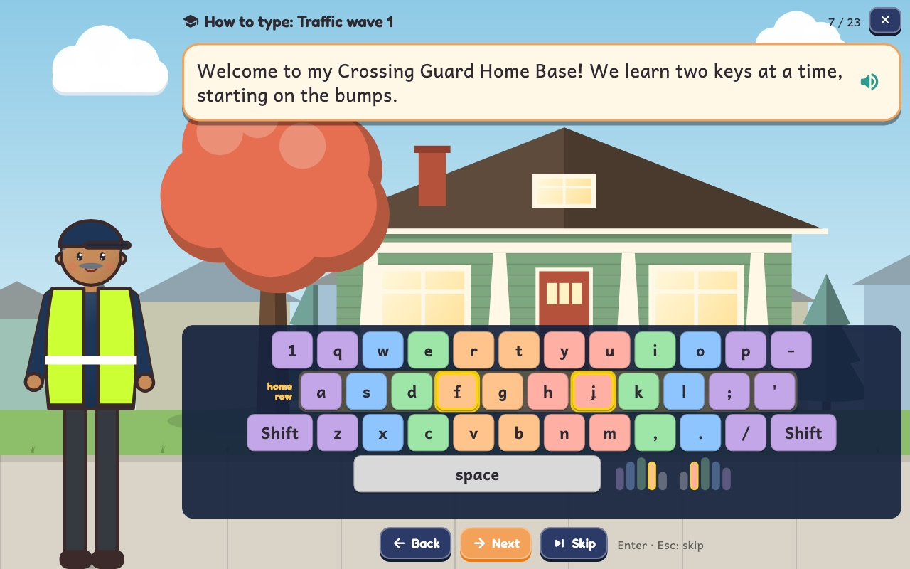
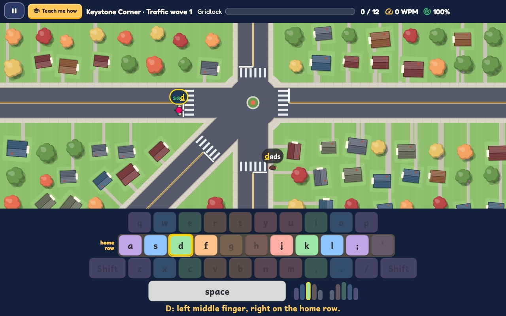
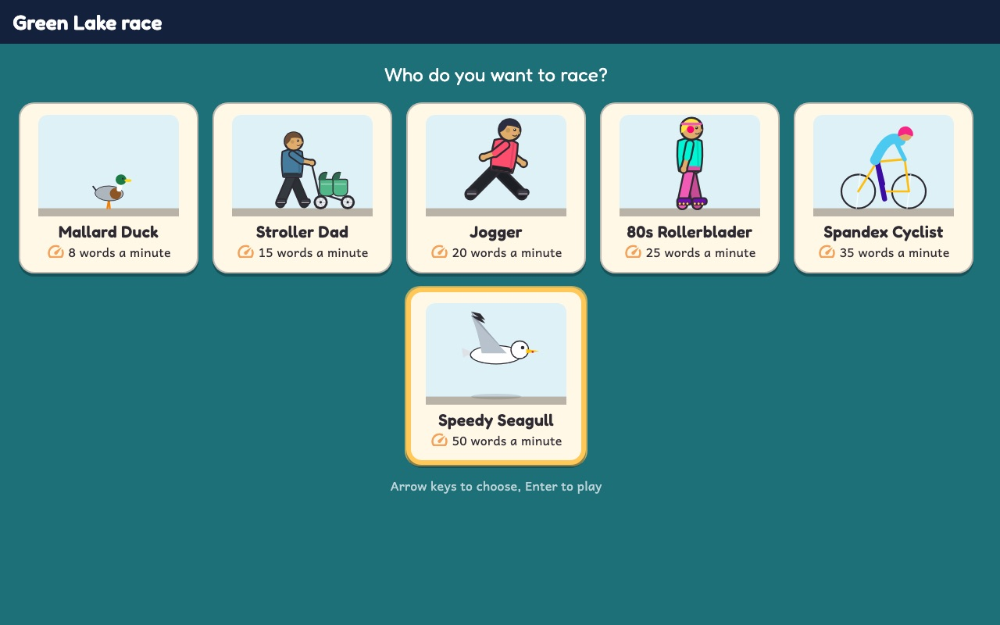
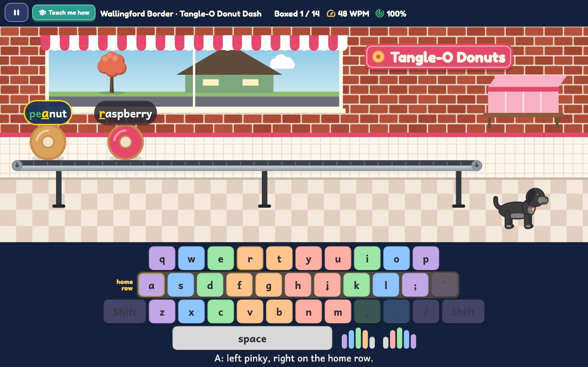
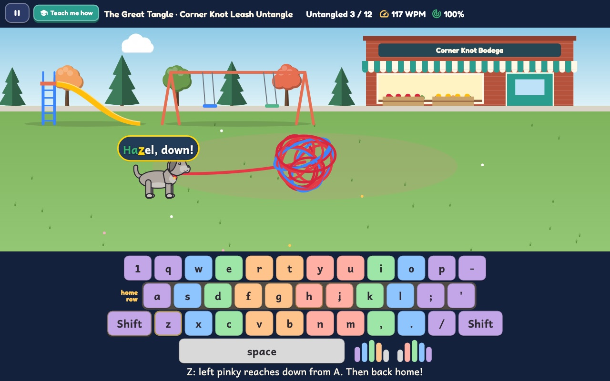
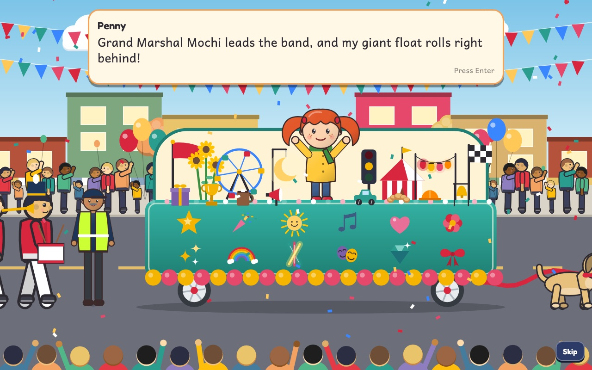
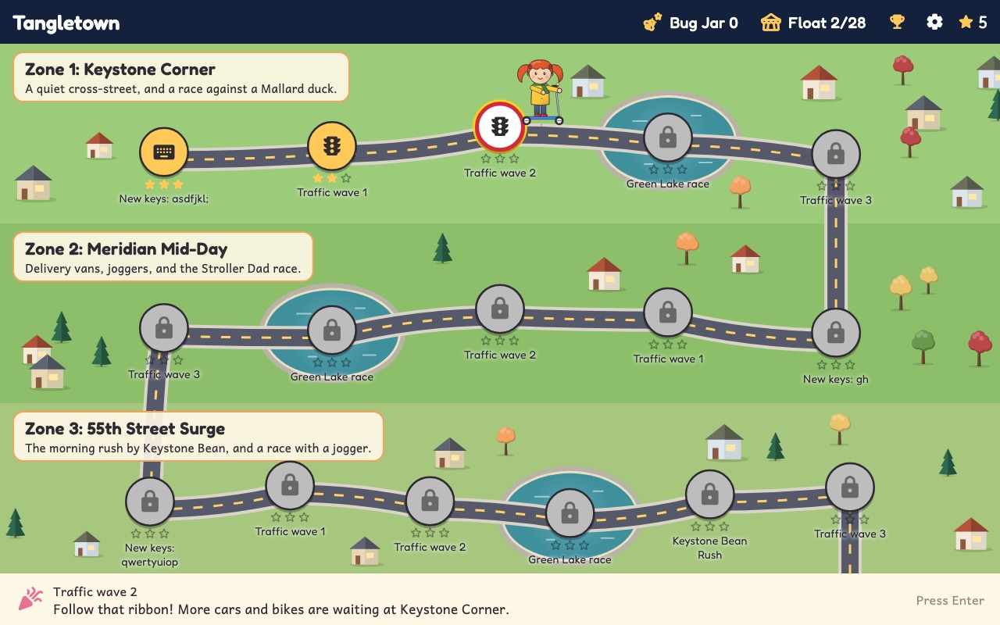
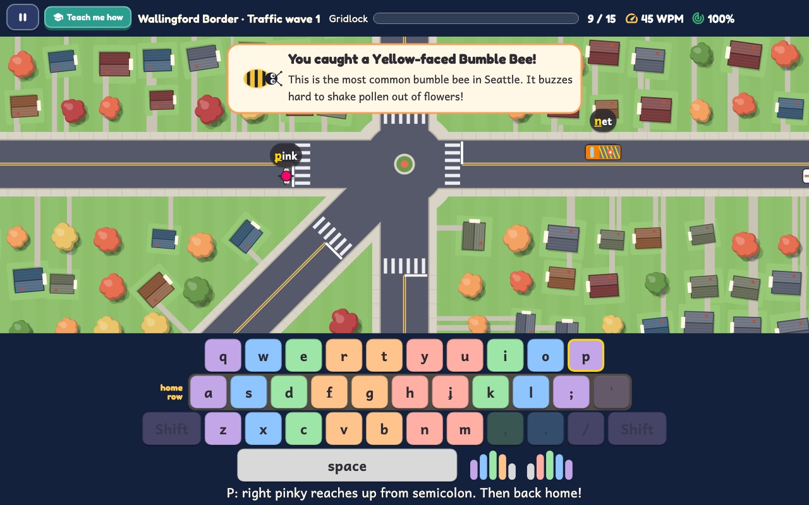
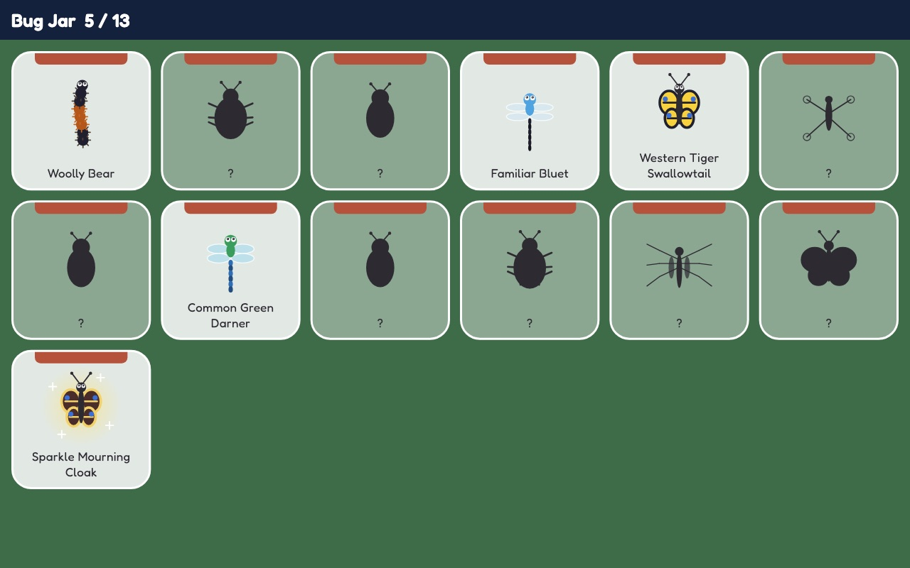

- ⌨️Real touch-typingHome row first, then every key, two at a time.
- 🖐️A finger guide on every keyIt always shows which finger to use, and how to reach.
- 🗣️Every line is voicedLessons and story are read aloud by the cast.
- 🔒No ads, no accountsNo tracking, no internet needed. Progress stays on the device.
Learn
Every key, taught by a neighbor.
Each part of town brings new keys, and the local who lives there teaches them: which finger, where it rests, and how it reaches. Then you get a turn to type each one before the level starts.
- Keystone Corner: the home row,
a s d f j k l ; - Meridian Mid-Day:
gandh - 55th Street Surge: the top row
- Wallingford Border: the bottom row
- The Great Tangle: Shift, capitals and punctuation

Untangle
Five streets meet. Nobody can move.
Cars, buses, bikes and walkers wait at Tangletown's famous five-way corner, each with a word above it. Type the first letter to pick one, finish the word and wave them through.
- The next letter is highlighted and underlined, so it never relies on color alone.
- The keyboard below lights up the key and says which finger to use.
- Too slow? The Gridlock Meter fills, and a quick home-row burst clears it. There's no game over.

Race
Type fast, scoot fast.
Around Green Lake, every correct key pushes Penny's scooter forward and every finished word is a boost. Keep typing to fill the Breeze Meter, and ring the bell to pass strollers, dog walkers and geese in the left lane.
- Race a Mallard duck at 8 words a minute, then Stroller Dad, a jogger, an 80s rollerblader and a spandex cyclist, all the way up to the Speedy Seagull at 50.
- Race your own best lap as a ghost scooter.
- Pass the Bathhouse Theater, Duck Island and the Aqua Theater stands.

Neighborhood games
Donuts, coffee and a knot of leashes.
Between the traffic waves and races, the neighborhood needs a hand.
- Tangle-O Donut Dash: type each flavor before the donut rolls off the belt.
- Keystone Bean Rush: serve the morning line by typing their names and orders.
- Corner Knot Leash Untangle: type "sit", "stay" and "roll over" to unbraid a giant knot of dogs.
- Mini-games mode lets you replay any of them with the whole keyboard.


The story
A parade, a missing ribbon, and a mystery.
It's parade day, and someone has run off with the big parade ribbon. At each of 28 stops a neighbor gives Penny a piece for the parade float, and clues along the way point to the bandit. Finish the town and the whole neighborhood marches down Meridian.
- A short cut scene after every stop, all voice-acted.
- A drawn town map that shows where you've been and where to go next.


Catch
13 real Tangletown insects to find.
Insects that really live around Green Lake buzz, crawl and skate through the levels. Type the name floating over one to catch it for your Bug Jar, along with a nature fact.
- Woolly bears, mason bees, bluets, water striders, Washington's state insect and a rare sparkly one.
- Send a caught insect to BugJug, our bug-pet app, with a code it scans. No internet involved.


For grown-ups
Made by a parent in Seattle who wanted a typing game that teaches properly, is fun to play, and doesn't ask anything of your child but their fingers.
📈 See how they're doing
The grown-ups page charts words per minute and accuracy over time, shows which keys need practice on a keyboard heat map, and lists every level's stars and best speed.
🎯 Taught the right way
Fingers start on the home row and learn two new keys at a time, on alternating hands. Words are drawn from what they can already type, with more practice on their weak keys.
💛 Friendly, never stressful
No game over, no shaming, no lives. Mistakes get a gentle nudge and a reminder of which finger to use.
🔒 Private by design
No ads, accounts, analytics or tracking, and the game never goes online. Racing names come from a list of fun nicknames, never typed in. Privacy policy
🧩 Accessible
Spoken lessons, adjustable word size, a finger guide you can turn on or off, less motion when you want it, and color is never the only cue.
⌨️ Needs a real keyboard
It's made for touch-typing, so on tablets it asks for a keyboard. A grown-up can allow on-screen keys from behind a grown-ups check.
One price. The whole town.
Tangletown Typing is a one-time $4.99, for keeps. No ads and no subscriptions.